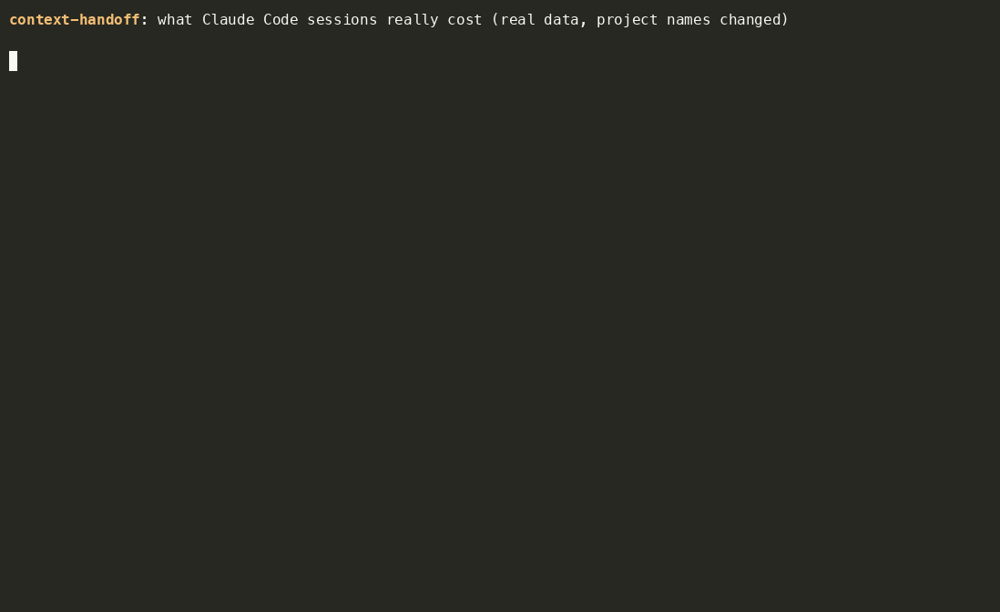

context-handoff
A Claude Code plugin that keeps long sessions from getting expensive: it shows what each turn costs, writes a handoff note when the session grows, and resumes from it after /clear.
/plugin marketplace add YauhenBichel/context-handoff
/plugin install context-handoff@context-handoff
Why Claude Code sessions get expensive
Every Claude Code turn re-sends the whole conversation. While the prompt cache is warm that re-read is cheap; after a pause of more than an hour the whole context is written to the cache again at 2× the input price. A 400K-token session on Claude Opus 5.5 pays about $3.20 for one such cold turn, before Claude writes a word. Long sessions also get slower and lose focus.
What it does
- Meter: before each prompt, the context size, the last turn's cost, the session's cost and what a cold turn would cost.
- Handoff: past a warn limit (150K context, $0.50 a turn or $20 a session), Claude writes a short handoff note when the current task is done. Past a block limit (400K or $3 a turn), the prompt is held until you type
handoffor add#override. - Resume: after
/clear, the newest unused note for the project is loaded, so you typegoand a fresh session continues.
See your own costs first
pipx install context-handoff
context-handoff report 14FAQ
How do I reduce Claude Code costs?
Keep sessions small. Most of the cost of a long session is re-reading its own context. Finish a task, write a handoff note, run /clear, and continue in a fresh session.
How do I continue a Claude Code session after /clear?
Write a handoff note before /clear. With this plugin, the note is loaded into the new session automatically; type go.
Does it work in VS Code and the desktop app?
Yes. Installed at user scope, its hooks run in the terminal, the VS Code extension and the desktop app.
Does it send my data anywhere?
No. Everything runs locally, using the Python standard library only.
Source on GitHub · PyPI · MIT licence